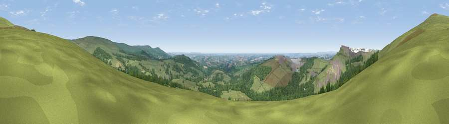

Viewpoint near Cornwood
#2657 in England · top 5% of its area beats it · near CornwoodWhere it is
The exact computed spot (SX 60200 61525). Click the marker for map links.
The view, rendered

A 360° render of this exact spot computed from the terrain model, tree cover and land cover — summer colours, afternoon light, calibrated against photographs of famous viewpoints. Real trees, hedges and buildings will differ in detail.
The panorama
Grey silhouette: terrain skyline in each direction (720 bearings, Earth curvature and refraction included). Dashed green: skyline with trees (+15 m) and buildings (+8 m) as obstacles. Blue strip: how far the ground is visible on each bearing.
Where the view opens
Wedge length = distance to the farthest visible ground on that bearing (vegetation-aware). Rings at 10, 25 and 50 km.
What fills the view
56% grassland · 34% woodland · 4% built-up · 3% cropland · 2% water · 1% bare ground
Angular shares of the visible panorama (visual magnitude), not map area. Landscape diversity 0.45 (0–1 Shannon).
Key numbers
More beautiful places nearby
The staircase of upgrades: each row has a higher view potential than everything closer. Driving times are estimates from straight-line distance, calibrated against real road routing — check an actual route before setting out.
| Place | Direction | Drive | Score |
|---|---|---|---|
| Penn Beacon | NNW · 1 km | ~4 min | 81.2 |
| Shell Top | NNW · 2 km | ~6 min | 81.8 |
| Viewpoint near Lee Moor | WNW · 5 km | ~10 min | 82.7 |
| Viewpoint near Hope | SSE · 24 km | ~39 min | 84.4 |
| Viewpoint near East Prawle | SE · 30 km | ~47 min | 84.6 |
| Pencarrow Head | WSW · 46 km | ~67 min | 86.0 |
| Viewpoint near Lesnewth | WNW · 57 km | ~79 min | 87.7 |
| Viewpoint near Crackington Haven | WNW · 57 km | ~79 min | 88.1 |
50.43688, -3.96995 · source: screening · position refined by local search. Computed location — check access rights before visiting.